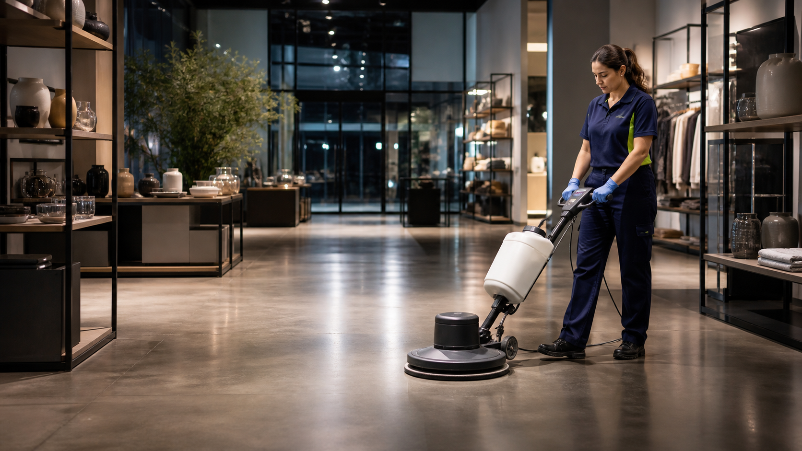
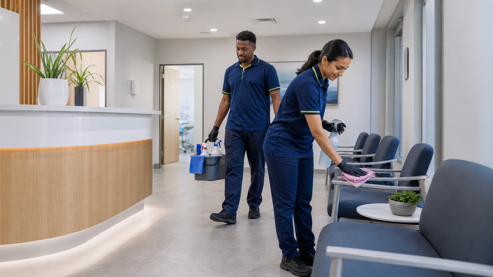

How we work
Clean28 service approachService should feel considered from the start.
We listen to the practical details of your site, build a scope around the priorities that matter, then keep each next step easy to understand.
A clear scope, thoughtful communication and reliable care for Perth workplaces, retail sites and facilities.

We listen to the practical details of your site, build a scope around the priorities that matter, then keep each next step easy to understand.
We talk through your rooms, high-use areas, preferred timing and cleaning priorities before proposing a plan.
Office, retail, clinic and facility environments each need a different rhythm — and the scope should reflect it.

Clean, welcoming spaces support better workdays and stronger first impressions.
We focus on the operational basics that help commercial cleaning feel straightforward and well managed.
Clean28 is fully insured for commercial cleaning work.
Safer, eco-friendly product options and practical work methods for your site.
Regular, one-off and after-hours options can be discussed around your operations.
A commercial cleaning plan shaped around the people, spaces and schedules in your area.
We want every part of your Clean28 experience to feel simple. If you cannot find what you need below, get in touch.
Ask us a question →We support corporate offices, retail stores, medical centres, schools, warehouses and commercial facilities across Perth.
Yes. We tailor cleaning plans around your operational schedule, with flexible and after-hours options where possible.
Your scope can include workstations, kitchens, washrooms, floors, internal windows, common areas and waste or recycling removal.
We use safe work practices, strict hygiene protocols and environmentally responsible product options to support healthy workplaces.
Tell us your suburb, space type and the areas that need attention. We will help shape a practical next step.
Ask for a tailored quoteYour site type, operating hours and priority areas give the quote a clear starting point.
We explain a proposed service plan and price in plain language.
Choose a practical service rhythm that supports your business.